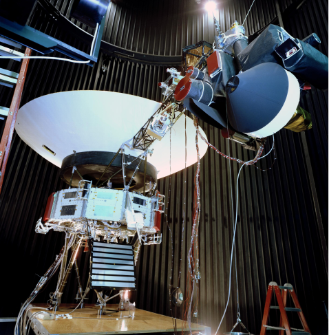
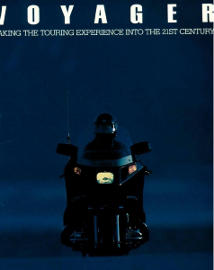
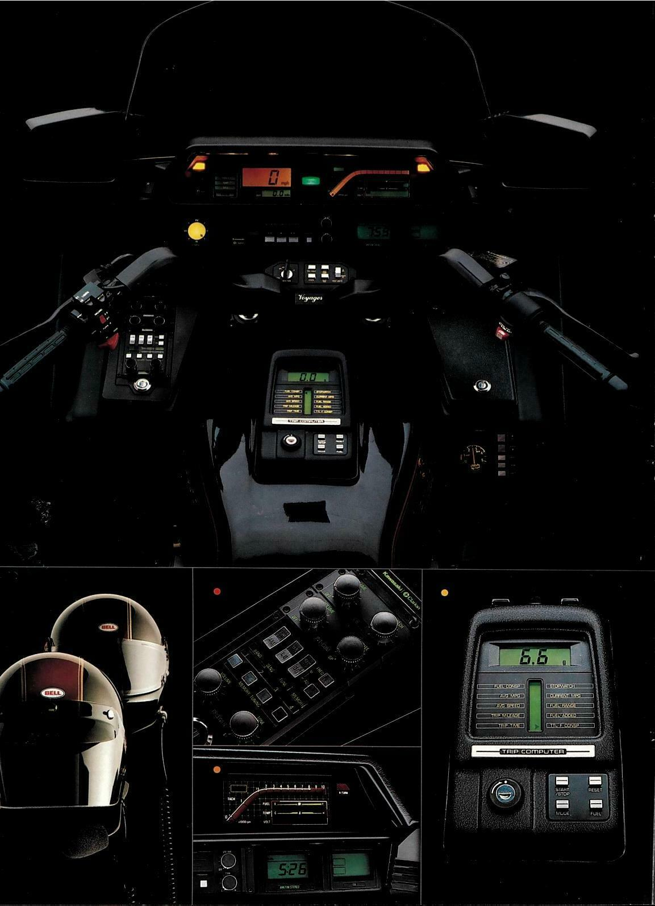

For quick reference, the Voyager project built two satellites with a whole arsenal of analytical, imaging, and communication equipment. They were launched into space in 1977. In the early 80s, they took the first and only fly-by images of Jupiter, Saturn, and Neptune.

Those two probes are in still out there somewhere, way beyond the bounds of our solar system. Now if Kawasaki’s Voyager moniker only alluded to the prospect of munching up a ton of highway miles, the comparison would be unlikely to induce a response. The strategy would fall equally flat if by Voyager they meant ‘advanced’.
(I have to mention the Plymouth Voyager van. This model actually predates the Voyager Intersteller Mission, but yeah moving on.)
Consider Kawasaki's pamphlet from 1983 - which shows a man riding the ‘touring experience into the 21st century’. Isn't it true that the satellite image above and the bike in the night exude some of the same qualities? They embody time and space and infinite potentiality all while standing still. When we ride a bike, we are where we are, where we were, and where we are going all at once. Just like that picture of Jupiter zaps us out of the containers in which we must necessarily live our lives, so too can experiences on a motorcycle. I think we can all say amen to that.
 
Look at the couple taking a picture of where they just rode from. You might recall how the Voyager probe also took glance back as she was leaving our solar system. In this image can be seen the Earth from nearly 4 billion miles away.
(Where is the Voyager motorcycle today? Interestingly, its design harkens back to space-race style curvatures. Pretty good-looking. This guy rode his to Mars.)